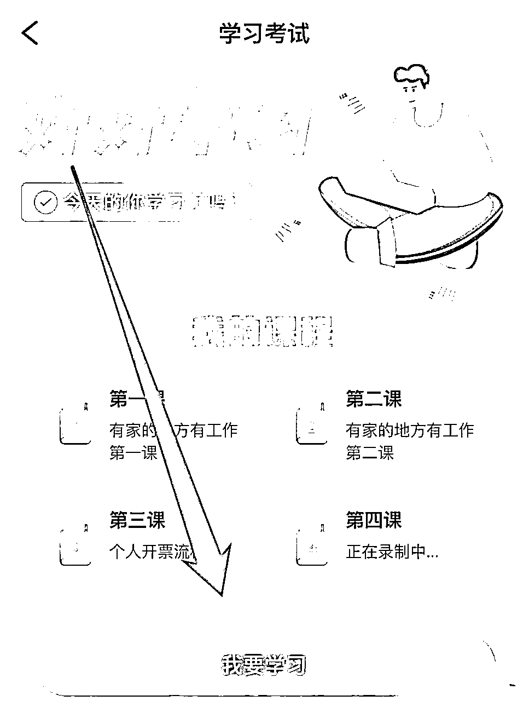

来源：https://aqlwlrfwynu.feishu.cn/docx/ScChddM7dox5inxxAbxcpe84n9e
感谢胖叔百忙抽出时间指导 这是我们跑了一个多月的佣金 整体操作还是很不错的
1 直播切片就是利用明星网红提供的素材，剪辑其中精彩的片段，剪辑成视频片段，发布在抖音账号上，挂小黄车带货赚佣金。
2 比如我们在刷抖音的时候，总能看到一些关于小杨哥、董宇辉直播的某个精彩瞬间，这就是IP切片。而且这样的账号还挺多的，这些矩阵账号，通过录屏小杨哥、郝邵文的直播间切片内容做剪辑，然后发布视频，挂上小黄车做带货，赚取佣金。
这种切片的视频一定能卖出产品吗？相信很多人都有这样的疑问，我们来看一组我们自己的带货收益，都是自己操作的案例，也都是几千粉丝的账号
从上图中，我们能看到的数据是，这些产品通过视频带货的销量都非常不错，上个月我们做小扬哥的直播切片的总共加起来做看的100多万GMV，粗略计算的一下，佣金大概是在17万左右。
这种模式为什么能够行得通呢？这是一个三方受益的项目
受益的第一方网红IP博主
网红明星的流量虽然很大，但是直播是有场次的，直播结束以后也就代表商品的销售结束了，后续很难再继续产生订单，而通过切片授权就让这个流量无限放大、带货视频和长尾流量；
对于很多头部主播来说，采用这种切片合作模式，可以快速建立自己的带活矩阵账号，不需要招聘员工，也不需要开支，就能无形中增加很多产品的销量，获得额外的收益，相当于躺着也可以挣这部分的钱，还可以合作商家提供更强大的带货矩阵，使销量更多，有利于切片创作者，也利于博主。
受益的第二方是想通过抖音的切片创作者们
不用自己拍摄内容，依靠IP博主在抖音自然热度、话题和播放量，来剪辑视频带货赚钱
就拿小杨哥直播切片来举例吧，你拿到三只羊的授权后，去创建个抖音叫小杨哥的精选超市，每天把小杨哥、大杨哥直播的内容。剪辑好视频，然后上传挂小黄车就可以赚取他们的佣金了，而且佣金比例相对来说还不是很低，毕竟商家找到头部IP切片合作的商品的售价、售后质量等都是有所保障的，而且你作为运营者可以拿到剩余的百分之的佣金，收入也是三七分
供应链货当然是卖得越多越好。
这套玩法具有很强的操作性，无论你是个体还是团队，工作室还是多大的公司，这种多方共赢的模式能够支撑整个项目的生存周期，它的持续性非常强。
网红IP、供应链赚多少都和我们普通人没有一分钱关系，我们要深入研究的就是适合我们普通人入手操作，能真真切切赚到钱才是王道，作为普通人，我们该如何入局呢？
项目准备工作
1、抖音1000加橱窗号
2、一台手机、
3、抖音500押金
三、项目启动操作流程
先说一下大致的思路：抖音账号准备——授权——剪辑视频——发布作品——带货赚钱
第一步：抖音带货账号准备
开橱窗 无限流开聚合支付
1000粉这个一点不难的，如果想做项目，连这个基础条件都没办法搞定，还是趁早放弃，账号实名认证、开通橱窗、绑定银行卡，开通聚合支付（四个结算方式都必须都开通），方便授权的时候一次性通过！
聚合支付未开通的在开通橱窗缴纳保证金后,找到（账号升级）选项绑定好自己的结算账号
粉丝满1000以上才可开通橱窗；开通聚合支付后才可设置佣金比例。
>第二步：拿授权下载众小二
注册登录众小二APP
点击内容分发
学习课程

完成考试
点击账号管理（新增账号，选择达人）
剪辑直播素材
完成任务，获得授权
当然，拿到IP切片的授权不等于就可以赚到钱。准备好了授权就可以开启直播切片这个项目，如果你有视频剪辑的基础，马上就可以开干，当然我还是建议要批量好操作，不要单纯的只做一个账号，一个账号要是做不起来，你就失去了信心，你要做的进行矩阵，就是大量做账号，把概率最大化，当然有人会说获得授权的佣金少了，自己私底下悄悄的做，卖一单佣金都是自己的，还不用给机构分。如果你有这样的想法，我趁你打消这个念头，不然就会被系统封号
要想长久安全的做好这个项目，我的建议还是要获得直播切片授权，原因有几点：
1、获得授权后，不至于害怕发视频，担心视频暴光之后被举报下架，利用网红效应提高曝光量，提高出单量，光明正大的赚取佣金
2、可可以从授权方获得源源不断的优质素材，进入授权方组织的交流群，一起提高创作的能力，大家互相交流赚钱
每家MCN机构都有对应的带货规则的，既然选择了加入其团队，就必须按照她们制定的规则来玩。
以小杨哥直播切片来举例：
发现他们使用的都是搞笑加产品展示流量作品就是定位先娱乐后带货，全部围绕娱乐带货来做发布。纯突出娱乐加搞笑。产品带货视频，吸引最精准的购物流量
很多账号发布小杨哥的带货视频，整体数据都很差，点赞也就几个，但每天都在更新，三条带货的视频，只要其中有一条爆了，就会不断的被推进更高的带货流量池中，不断的有人看到视频并下单，从而带动整个账号的权重，提高整体的账号销量，最后他们的账号也就做成了一个月带货10万销量，50万销量的账号
抖音上很多做小杨哥做的好的账号都是值得我们去学习和模仿的。别人做的好都是有。他们做的好的原因的
前期不用创新，先模仿
项目收益
收益1：带货赚佣金小杨哥现在的佣金是3:7，直播和机构的佣金比例基本都是50%，就50%这样的划分，mcn机构来变占50%，然后你这边再去做这个事
根据我打听到的消息，得到的一个数据是：小杨哥目前每月可以靠这些授权切片赚取佣金收益1600万左右，其中很大的收益分给下游直播切片的合作的剪辑师。
抖音切片带货是当下的风口，我们也是从去年第一批的切片剪辑师
如果没拿到授权就开始操作，最大的风险就是视频容易判搬运，轻则违规降权没流量，重则永久封号，还有可能会导致经济赔偿。
按照我今天分享的玩法，先拿到授权，风险还是有的，毕竟每个项目都有时间的投入，拿了授权后不懂得如何运营，每天浪费时间没有产出成效，至于押金是今后可以退的。
小鱼真心话
一、低成本试错，小步快跑
类似于直播切片这种轻资产起步的好项目很难找！整个项目不需要投入太多资金，完全是轻资产运作！优势很明显！
抖音IP切片优势在哪儿，我认为有四个点：
1、这个项目门槛极低，几乎没有什么准入门槛，还易操作，短期内能拿到结果，还具有可复制性，整个复制性是非常非常强的，个人可以多操作几个号，如果是工作室，可以让员工找网红素材剪辑发布运营。
2、明星网红IP自带流量，你要做的就是大量剪辑发布，视频火爆就有流量，有流量就有订单，有订单就有佣金可赚。
3、玩法持久。很多人就说玩法持久，这个不持久吧，因为网红都好像没有持续红下去的网红，但我要告诉你的是，这套玩法你如果掌握了，你可以持续地找一直火的网红呀。
记住铁打切片 流水的ip，
谁火就找谁拿授权，就剪辑他的视频，带货赚钱。
二、努力执行，才能有赚钱的可能性
开通账号橱窗拿到授权，仅仅是开启了这个项目的第一步，最重要的还是强大执行操作，千万不要异想天开，不要想太多去操作了才能赚钱，一个号能赚钱就复制第二个号，能矩阵批量做的尽量批量做，用数量增加成功的概率！
低成本试错，快速跑通模式
感谢胖叔一直对我的切片规划作出的宝贵的指导，也感谢他带我入生财，在我最迷茫的时候给了我一个方向，一辈子好哥哥